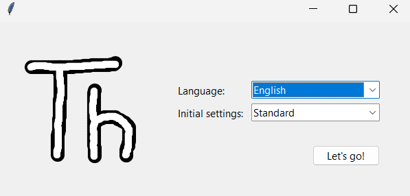
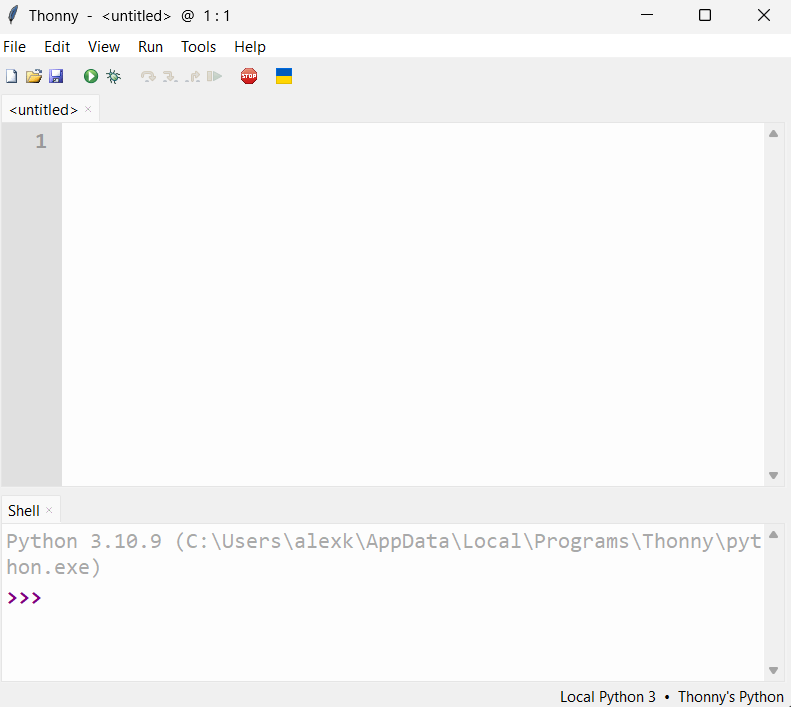
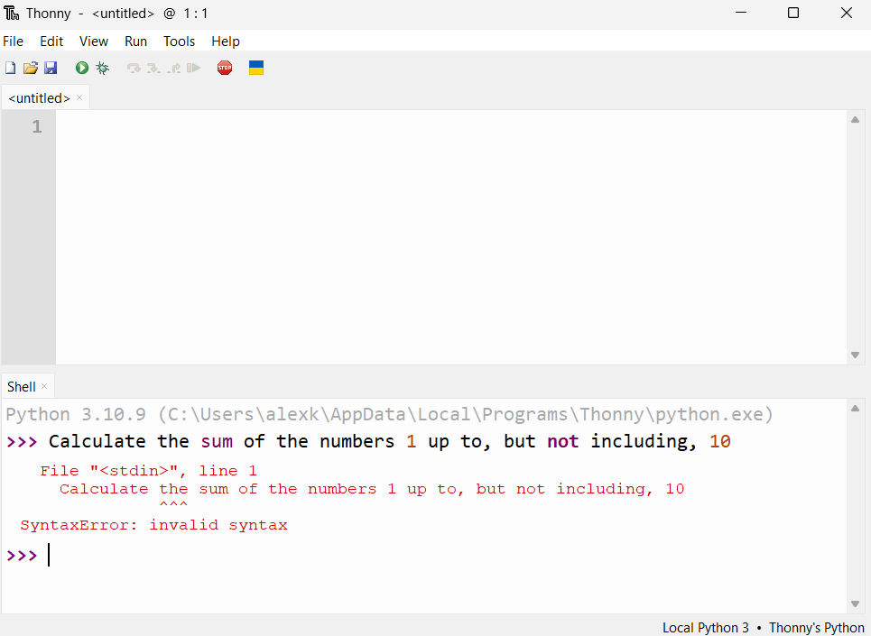
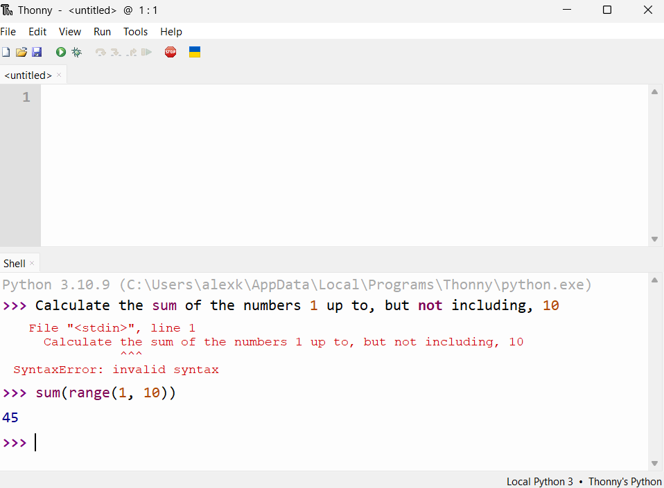
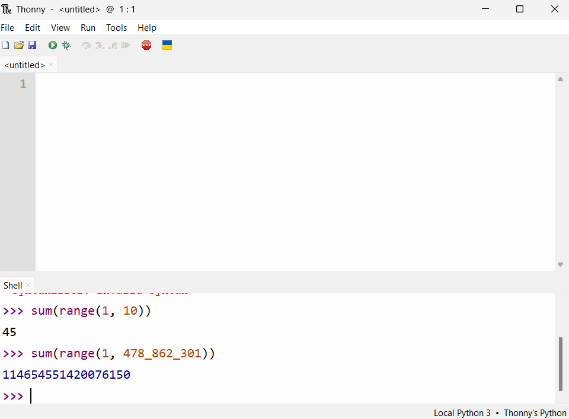

🐍 The Python Language
Python is famous for being an easy-to-learn, yet powerful, programming language. The Python language is, in some ways, very similar to English. Let's compare Python and English by looking at key components of languages in general: 1) Interpreters and 2) Syntax.
Interpreters 👂
You can write instructions in English like
Calculate the sum of the numbers 1 up to, but not including, 10
Of course, nothing will happen if you write down these instructions on a piece of paper, or if you say these instructions out loud in an empty room.
Instructions in any language are only useful if there is someone there to interpret the instructions. So, you text your friend the instructions to sum up the numbers. They respond with "45". Your friend is the interpreter for the instruction.
The Python language is the same. On its own the language is kind of useless, it's just a bunch of rules for how to arrange words and numbers. You need a Python interpreter that can understand the instructions and execute them.
Where can I get a Python interpreter?
While you could download the latest "official"1 Python interpreter here, for this tutorial we will use Thonny. It comes with version 3.10 of the "official" Python interpreter (as of time of writing). When we get more experience using Python, we will transition to the latest Python interpreter.
Follow the installation instructions for Thonny for your operating system (i.e. Windows or Mac)
Thonny Initial Settings
Make sure to pick "Standard"

When the software is finished installing, open it.
You should see something like this:

Syntax 📝
Syntax is the structure of words in a sentence.
For example, in English we say:
That dog is so fluffy and cute!
But we wouldn't say:
fuffy !That so dog cute is and
The sentence above uses the exact same words and punctuation, but it doesn't make sense. It doesn't use correct English syntax.
Python also has a syntax; there is a right and wrong way to structure sentences in Python.
Let's revisit the sum example, where you texted your friend:
Calculate the sum of the numbers 1 up to, but not including, 10
If you try typing this into Thonny, specifically the part of the app that says "Shell":

The Python interpreter doesn't understand what we're saying, because we haven't structured the sentence correctly in the Python language. Unlike your friend, the Python interpreter won't bother to ask us to clarify or rephrase what we meant. It will give up trying to understand our instructions very quickly, but will usually tell us why it gave up. In this case, the interpreter gave up, or threw an error, because it didn't understand the syntax of the instruction we provided to it. The Python interpreter doesn't speak English, it speaks Python.
Entering instructions
After we finish typing an instruction, we need to enter the instruction into the interpreter by pressing the enter/return key on our keyboard; this is what we mean by entering an instruction.
This is the same as when you type in a search query into Google or Bing. You have to hit enter for the search engine to actually start searching.
After we enter an instruction, the Python interpreter will try to understand the instruction and, if it does, will return the result of the instruction on the screen
Python can be tricky initially because:
- We're not yet fluent in the language
- We're used to human languages, which are much more powerful and flexible than Python2
There are lots of valid ways to ask someone to sum up the numbers 1 up to, but not including, 10 in English or any other human language. But in Python we say
sum(range(1, 10))
Calculate the sum of the numbers 1 up to, but not including, 10

Python looks like a bare-bones version of English, kind of like a cave-person language. But it's still pretty powerful. Now imagine you text your friend
Calculate the sum of the numbers 1 up to, but not including, 478,862,301
sum(range(1, 478_862_301))
It would probably take your friend a significantly longer amount of time to do this calculation by hand. But the Python interpreter just takes a few seconds:

Making numbers easier to read
We could write 478862301, but that's a little tricky to read.
Lot's of languages have ways to make numbers easier to read, including Python.
| Language | Separator | Syntax |
|---|---|---|
| English | comma (,) |
478,862,301 |
| French | period (.) |
478.862.301 |
| Python | underscore (_) |
478_862_301 |
We'll look at a lot of examples of how to write Python with proper syntax throughout this tutorial. For now, I highly recommend you try the exercises below.
Exercises 🏋️♀️
Q1. What is an interpreter?
Answer
Something that can understand instructions in a language and execute those instructions
For the English language, people are the interpreter.
For Python, it is a piece of software called the Python Interpreter.
Q2. What is syntax?
Answer
Syntax is the structure of sentences in a language.
Q3. Imagine you want your friend to throw a frisbee at you. State whether each sentence has the correct syntax in English:
i. "Hey! Hey! Hey! Frisbee! Hey! Frisbee! Frisbee!"
ii. "Hey, throw the Frisbee here!"
iii. "May you please pass that rotating plastic disk to my general direction by means of sudden impulse using your hands?"
iv. "Frisbee here now the !throw"
Answer
i., ii., and iii., are perfectly valid ways to ask for a frisbee in English
iv. is not valid English syntax
Q4. Calculate the sum of the numbers 1 to 53,786 using Python. You should get 1,446,493,791
Hint
The sum should include the number 53,786 but remember that range(a, b) only includes up to b - 1
Answer
sum(range(53_787))
sum(range(53787))
Notice that to include 53,786 we need to go one number higher and use 53,787
Alternatively, we could write:
sum(range(53_786 + 1))
In later tutorials we will discuss number crunching in Python
Q5. Read section 4.3 of the Python documentation on range().
i. Try typing in some the examples given.
ii. Write down a list of things that confuse you.
iii. Create a list of the even numbers from 1 to 20 (including 20). Then try the odd numbers. Test your solutions in the Thonny shell.
Answer
Even
list(range(2, 20 + 1, 2))
Odd
list(range(1, 21, 2))
Q6. If you haven't already, skim through the official Python tutorial. A lot of it might not make sense just yet, but you should still look through it to get some more context about Python
Q7. Finally, and most importantly, why do you want to learn Python?
Possible answers
Develop industry-relevant skills
Automate boring, repetitive tasks at work and home
Learn for the fun of it
I'm soooooooooooo boooooooored
-
By "official", we mean the most up-to-date interpreter. There's no "pirated" version of the Python interpreter because it's completely open-source and free! There are, however, several alternative implementations of the Python interpreter, like PyPy (for Python that runs fast), or MicroPython (for running Python on micro controllers). Most people should stick to the interpreter from the Python Software Foundation ↩
-
In my opinion. The interpreters for natural languages, our brains, are extraordinarily complex, flexible, and powerful, and the power of a language tends to be limited to the complexity of its interpreter. ↩